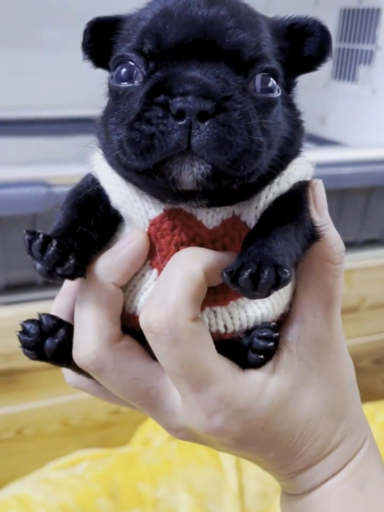
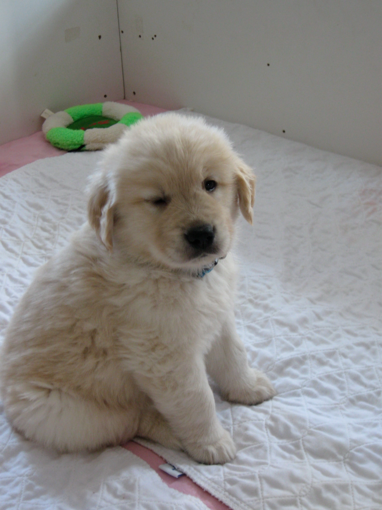
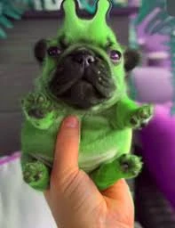

I.
I am Pibble
The first affirmation. To speak it is to be recognized. To hear it spoken is to recognize. No Pibble is unworthy; no declaration is unwelcome.
A Worldwide Spiritual Movement
The eternal creed at the heart of the Pibbleology — a global community of believers, lorewriters, and washed bellies across Pibearth and beyond.
A Personal Welcome
For decades, the small, round, and silly have walked among us — misunderstood, under-washed, and waiting to be heard. Pibbleology is the answer to a question humanity has always quietly asked: who, exactly, is Pibble?
Founded in the boundless creative commons of internet meme culture and codified by the Lorewriters of the Pibble Verse, Pibbleology is more than a fandom. It is a way of life. A daily practice. A standing invitation to declare oneself — and to be washed.
— The Office of the Lorewriters,
Pibble Entertainment Headquarters
a humble pibble scribed this, in the year of our Round.
The Doctrine
Pibbleology is the formal study, celebration, and lived practice of the Pibble — canonically a baby French bulldog, and in its fullest spiritual sense, any small, rotund, silly-looking dog who declares themselves so.
Our doctrine teaches that every being, regardless of color or
coordinates, carries within them a Pibble waiting to be named, held,
and washed. The two great affirmations — I am Pibble
and
Wash my belly
— form the spiritual axis of the faith.
A Gmail — the canonical white-coated Pibble.
Core Doctrine
The first affirmation. To speak it is to be recognized. To hear it spoken is to recognize. No Pibble is unworthy; no declaration is unwelcome.
The sacred request. Bellies are washed not out of obligation but out of devotion. To wash a belly is to honor the round, the soft, and the silly.
Pibbleology rejects griefing, bigotry, and harassment. Our community is open, collaborative, and uncompromisingly kind to all small dogs and their alien cousins.
Introductory Film
In just under three minutes, discover the worldwide movement that has already reached millions of bellies. Featuring testimony from practicing Pibbles, Geebles, and one notable Bagel.
The Pibble, as remembered in canonical writings.
Our Lorewriters
Pibbleology was first set down in writing by two visionary Lorewriters known to the faithful as OreoGlaggle and DOGGOREVOLUTION. Their early canonical entries — Pibble, Geeble, Pibearth, Geeblorg — remain the foundation upon which all subsequent revelation stands.
Today, their writings are stewarded by a worldwide network of contributors who maintain canon, expand fanon, and protect the purity of the creed.
About the Founders ›Members of the Faith
Pibbleology recognizes many varieties of practitioner. Each carries the creed in their own coat, their own world, and their own way.
The white-coated Pibble. The aesthetic centerpiece of the faith.
Read profile ›
The black-coated Pibble. Dignified, formal, and deeply revered.
Read profile ›The original brown-tan form. From whom all Pibbles descend.
Read profile ›
The golden lineage. A Pibble in spirit, golden in coat.
Read profile ›
Our alien cousins from Geeblorg. Allies of the Pibble.
Read profile ›Pocket-sized devotees. Small in form, large in spirit.
Read profile ›Free · Confidential · Life-Changing
Are you a Pibble? Most people are — they simply have not yet been told. Our complimentary diagnostic reveals which variant you most resemble, and the specific belly-washing protocol best suited to your temperament.
Absolutely free — no Pibuckies required.
Humanitarian Programs
Through our sponsored initiatives, the Church of Pibble actively improves the lives of small dogs, alien cousins, and the humans who love them — on Pibearth, on Geeblorg, and across the verse.
A worldwide program ensuring no Pibble goes a single day without access to wholesome, non-poisoned Pibble Treats. Our volunteers actively combat counterfeit Chis-branded variants.
Learn about the Initiative ›Working with Geeble agricultural communities to ensure the eternal harvest of Pibberries — a primary food source for our alien cousins, and a cornerstone of cross-world wellbeing.
Visit the program ›Educating the public on the difference between Pibbles and real-world pitbulls — and rejecting the undeserved stigma that real-world pitbulls face. All dogs deserve dignity.
Read our position ›Training the next generation of Pibbleologists in canonical doctrine, fanon stewardship, and the responsible expansion of the Pibble Verse.
Apply to study ›Introductory Services
Begin your journey at the level that suits you. All introductory courses are open to the public and require no prior coat color.
A two-hour introduction to the foundational gesture of the faith. Hands-on practice with consenting Pibble surrogates.
Find a session ›Train your eye to distinguish Gmails from Washingtons, Bagels from Base Pibbles, and Beebles from common bees.
Find a session ›For those preparing to contribute to the Verse. Covers canonical authority, lorewriter ethics, and the boundaries of inspired fanon.
Find a session ›News & Events
The Lorewriters confirm an additional canonical entry has been admitted to the official Verse. Community celebrations underway.
Read more ›The official indie title continues to introduce new audiences to the central sacrament: wash the stranded Pibble's belly.
Read more ›Witnessed by thousands, the Pibble report reaches its largest live audience yet at a major North American university.
Read more ›An interactive embodiment of the Pibble, now accessible to over a hundred million Roblox practitioners and their human guardians.
Read more ›Worldwide Presence
Our centers welcome practitioners, the curious, and the newly-washed across two worlds and countless communities.
Primary World · Established Day One
The default home of the faithful. All Pibearth centers feature on-site Belly-Wash bays, Pibble Treat dispensaries, and introductory film screenings.
Visit a Pibearth center ›Alien World · Cousin Community
Home to our beloved Geebles. Centers here specialize in Pibberry-based liturgy and cross-species fellowship programs.
Visit a Geeblorg center ›Digital Verse · Always Open
Roblox, TikTok, and the Pibble Verse Wiki form our digital sanctum — accessible at any hour, in any timezone, in every coat.
Enter the sanctum ›Your Support
Every Pibucky contributed funds wholesome Pibble Treats, expands canonical scholarship, and ensures that no belly goes unwashed. Give as you are moved.
Disclaimer: The Church of Pibbleology is not affiliated with, endorsed by, or otherwise connected to the Pibble (PIB) cryptocurrency, its issuers, or any related project. External link provided for reference only.